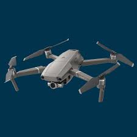

Resume of Richard Eaton

Summary
Richard E is a drone pilot for the non-profit group "Lost Pets of Omaha Area". He employs a thermal imaging drone for identifying the location of a lost pet. He flys the DJI Enterprise 3 T. We cover the Omaha. Nebraska area and surrounding communities. We will also consider locations with a few hours of Omaha.
Credentials
- FAA Part 107 Remote Pilot Certification: September 2017
- Insured by Skywatch Aviation Insurance
- Still learning: 33 hours actual in-the-air flight experience
Work Experience/Results
We have had our drone for 4 months now. As of September 1, 2024, we have conducted 17 pet searches with the following outcomes:
- 1 dog that was found before arriving on site
- 5 pets that have never been found
- 10 pets that were found far from the location that we were told to search
- 1 small dog found tangkled up in a brushy area
Contact Me Here